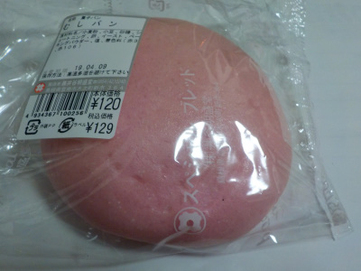
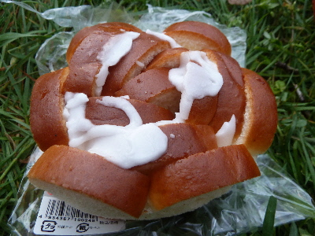
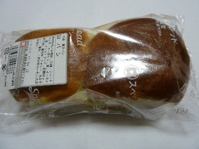
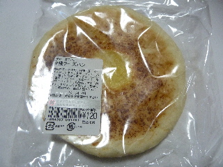
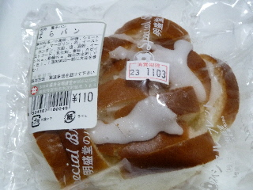

井谷明盛堂さんは製パン業は終了だそうです。
2020/04/25
山陰中央新報の記事によると、4/30で製パンは終了だそうです。
最後にバラパン食べたいって思いますが、新型コロナがあるので不要不急の外出は出来ないです。
島根県雲南市木次町新市364
2020/04/25
山陰中央新報の記事によると、4/30で製パンは終了だそうです。
最後にバラパン食べたいって思いますが、新型コロナがあるので不要不急の外出は出来ないです。
2019/04/06
桜の季節なのでピンク色のパンを買いました。

ムシパンの中にはあんこが入っていました。
ムシパンとアンコなのでお饅頭ですね。
お祝いごとで紅白饅頭がありますが、それに近い感じがしました。お饅頭ほどアンコはギッシリ入ってなかったです。
でも120円でおおきいお饅頭が食べれると思うとお得ですね。
こうゆうのって久々に食べたので、懐かしい気分でした。
2017/04/08
桜の花見をしながらパンを食べました。

井谷明盛堂のローゼットです。
花見で散歩したので、甘いものが美味しかったです。

こっちも井谷明盛堂の商品で、山パンです。
これも甘くて美味しかったです。
2014/04/07
平べったいおやきみたいなパンです。

パン上部の焦げ目らへんがチーズ風味なのかな？って思ったんですが、食べてみるとパンの中にチーズが入っていました。
平べったいのに、具がちゃんと入るもんですね。
チーズ味がしっかりあって、良かったです。
2011/10/29
みしまや三刀屋店でばらパン買いました。
ここのばらパンは砂糖がかかってます。

砂糖多いですね。
ばらパンなので、パンの間にクリームが挟んてありました。
甘さが効いてて美味しかったです。
バラパン関連